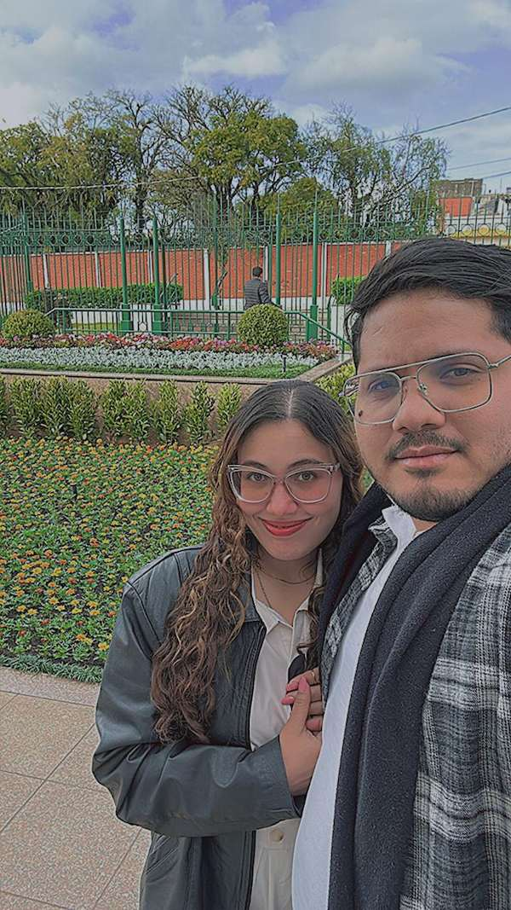

WDD 130 | Eloy Francisco Martinez Cabello

Hi everyone, I'm Eloy. I was born in Venezuela, but I'm currently living in Viamão, Brazil. I'm married, and my wife is also Venezuelan. Professionally, I work as a Trilingual Service Desk Analyst for a tech company. When I'm not working, I love spending time with my family, usually by watching movies together.